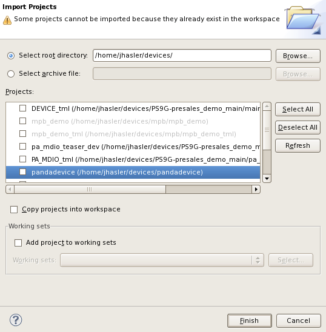

Warnings and error messages when starting SmarTest
Warning
On start up SmarTest checks all references, including the device and referenced test methods and asks you for any referenced project that is not yet imported.

- To import referenced projects, click Import missing projects into
workspace to import projects:

Error Messages
Error |
Solution |
|---|---|
Workspace in use, choose a different one. |
|
java.io.IOException: No locks available |
|
Functional changes
- Introduced before SmarTest 6.3.2